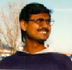

WEEKEND THOUGHTS # 28

Dear Ornetters,
We are back with another edition of "Weekend Thoughts" after a long hiatus. WT is protrayal of our imagination, our thought processes. So it'll never cease to exist as long as we have feelings, emotions, ideas and opinions to share with Oriyas around the globe. Welcome back to the world of WT.
Our contributor is Swapnakant Mohanty, a Software Professional at Minneapolis, Minnesota, USA; originally from Bhubaneswar. The article is a very pleasant recollection of his childhood memory and a heartwarming tribute to his father.
Enjoy the article and once again, welcome aboard WT, the train of thoughts.
With regards
Surjit Sahoo December 6, 1996
(ssahoo@ingr.com)
Huntsville, Alabama
Name : Swapnakant Mohanty
High School : Secondary Board High School,Cuttack (till Class IX)
Govt. Boys' High School, Unit 1, Bhubaneswar (1983)
I.Sc. : B.J.B. College, Bhubaneswar (1985)
B.Sc. (Phy) : B.J.B. College, Bhubaneswar (1987)
M.C.A. : Regional Engg. College, Rourkela (1990)
Work History: HCL Hewlett-Packard Ltd., India (1990-94)
Mastech Corporation, PA, USA (1994-96)
Analysts International Corp, MN, USA (1996 - till date)
Client Loc : Honeywell Corp., MN, USA
Hobbies : Stage Acting, Outdoors, Watching Action Movies,
Informal Socialization.
Married to Vijayashree Pydikondala(Vijji) since March 19, 1994.
A Day At My Dad's Office
As a kid, I always used to wonder about what my Dad did at work. He was an Engineer (He passed away in 1990). I knew that he used to go to different sites and monitor the construction work, but I was always curious about what he did when he was in the office.
Once at the dinner table, I asked him,
"What do you do at work?"
He smiled. "I work."
"Yeah, but what do you work on?"
"Well. I monitor the construction work. I go to different
construction sites and make sure that everybody is doing what
they are supposed to do and the way they are supposed to do"
"So, is it like the work of a class monitor?"
He laughed a lot. "Yeah, kind of."
I was not very convinced.
"What do you do in the office, when you are not at a construction site?"
"I work on files."
Now I was confused.
"What is there to work on files? Is it like doing homework,
Mathematics or something?"
"Why don't you come to my office once to see what I am doing?"
"Sure."
My dad and I tried to schedule a time when I could go to his office and see him work. Most of the time we used to end up re-scheduling the appointment because of my school timings or he had to go to a construction site. I was not interested to find out what he does at the construction site.
Finally it worked out and I went with him to his office to find out what he usually does. I liked my Dad as a Boss in the office. The moment we reached, he just got down from the jeep and started walking to his room. I just followed him wondering why he left his briefcase in the jeep. Everybody got up on their feet and said "Sir Namaskaar" and I liked it.
It was a nice office room, big ceiling, very long ceiling fan, full size curtains -- basically a very well maintained clean room. He had a big table in the center of the room and one wooden chair for him (he had back problem and that's why a wooden chair was ordered for him) with a nice cushion on it. There were four nice chairs facing him at the other side of the table. There was a sofa and a coffee table at one side of the room.
His table was well organized. He had two phones, a black one and a red one. There was a flower vase on the table and a very nice pen stand. There was also a pile of files on one corner of the table. I liked the set-up and was very happy that my Dad works in a very good environment. It was stylish.
I was constantly looking at those FILES, my main target of observation for that day. I was wondering, "What is there in these files that keep my Dad busy?"
As soon as we came into his office room, his peon came and pulled all the curtains, started the fan and came back with Dad's briefcase and a glass of water. Dad called up my Mom and let her know that he had reached office. (This was actually a signal to Mom - "Go ahead and use the phone to talk about what you cooked today and find out what your friend is cooking for her husband")
My father had very stylish reading-glasses. He put them on and started looking at the file that was on the top of the lot. The file was probably as thick as my No-10 Mathematics notebook. He read the first page in two minutes.
"C-r-r-r-r-i-i-i-i-n-n-n-n-g-g-g-g." He rang the calling bell.
"Sir?" The peon was there in no time.
"Badabaabunku daakila."
"Sir, Namaskaar." Badabaabu came.
"Namaskaar. Badabaabu, se Khordha executive engineer kahile ki
taanka raastaara kana hela?"
"Naai Sir. Phone ta kari naahaanti."
"Tike bujhile aapana."
"Sir."
Badabaabu left and Dad started signing that file in three or four pages and closed the file and dropped it in the floor. Then he called his peon and asked him to take the file to Badabaabu. I was watching him and was stunned. Calling Badabaabu was no way related to that particular file, at least that's what I thought.
"Dad, you didn't even read what was there in that file and
you signed it?"
"I know what was there in that file."
"How?"
"You will know when you will be an Engineer."
I was not convinced, but I liked it. My Dad knows so many things.
Dad got rid of all the files in a similar way. Sometime he would raise his head to look at me, sometime he would call somebody, he would answer to the phone. Then one of his colleague walked in and they started talking about some funny things, laughed.
"When would I grow up and be an Engineer?" I thought.
I liked the idea that you just have to sign a file at three or four different places (and you do not have to read them) and then you are done. Nobody will scream at you at any point of time, rather people will be quiet when you are around. There is no class monitor to note down your name when you are talking to your friend and the best thing is there would be no homework, no teacher and no exams.
I watched my Dad working till lunch time and then both of us drove back home. At that point of time, I was not sure whether I got the answer to my original question or not, but I liked the time I spent in my Dad's office.
I am a software consultant now. At a client site, we fight over problems while trying to resolve them. We do not leave any stone unturned, while defining the specifications for the project. Finally, when somebody types the specifications and send a copy to me, I don't even look at the specifications and start working on that.
Today, if my son asks me to take him to my work for a day, I am sure he will also have the same questions as I had, when I was a kid.
But, I understand today that even if my father was not reading the files, he actually knew what exactly was there in the file.
Your comments are always welcome...

 Swapnakant Mohanty
Swapnakant Mohanty


![[IMAGE]](mult.gif)
![[IMAGE]](jag.gif)
Ride back to Home Page...
![[IMAGE]](rath.gif)